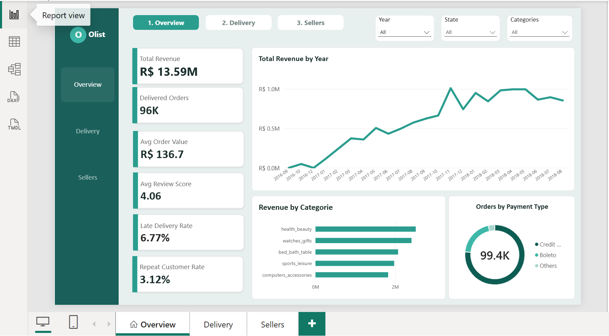
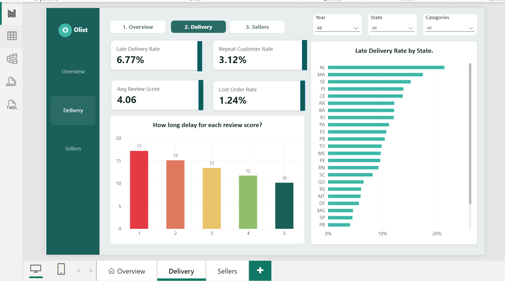
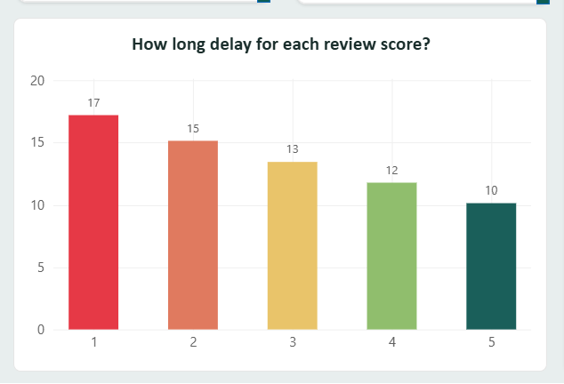
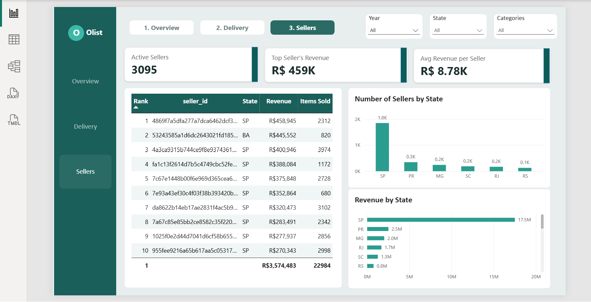
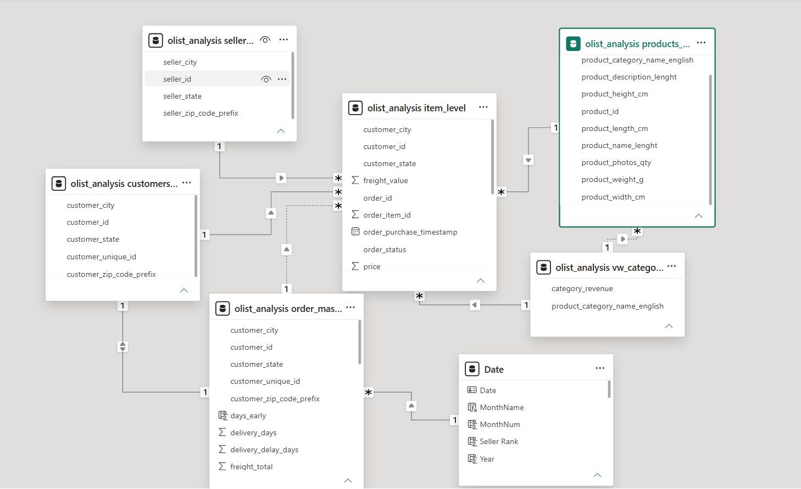
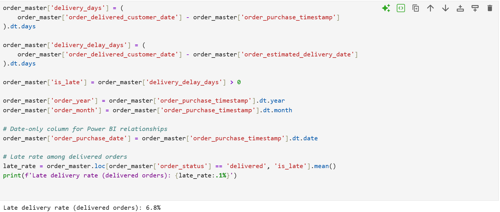
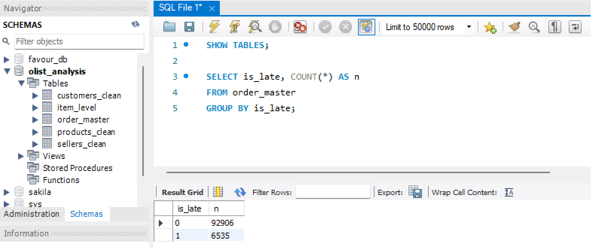

SELECTED PROJECT / E-COMMERCE ANALYTICS
Olist E-Commerce Analytics
An end-to-end analysis of 99,441 Brazilian marketplace orders from 2016–2018. I prepared nine related source tables, validated the database, modelled the reporting layer, and built Power BI views to examine revenue, delivery, customer retention, and seller concentration.
01 / BUSINESS CONTEXT
Why this analysis
Olist connects small sellers with customers and does not hold inventory. Strong sales can mask late fulfilment, weak repeat purchasing, or dependence on a small number of sellers. The project brings order, customer, item, payment, product, seller, and delivery information into an analysis that makes those patterns easier to inspect.
Questions explored
- How did revenue change over time and across product categories and payment types?
- How often were orders delivered late, and how did the rate vary by state?
- How did delivery waits relate to customer review scores?
- How concentrated was revenue among sellers?
Scope: historical marketplace records from 2016–2018, with monetary values in Brazilian reais (R$). The results describe this dataset and should not be read as current marketplace performance.
02 / DATA WORKFLOW
From source tables to decision views
Python — prepare and engineer
Used pandas to correct date fields, create delivery duration and delay measures, flag late orders, translate Portuguese product categories, and aggregate item and payment records at the appropriate grain. That aggregation step protects order value from being duplicated when tables with different row-level detail are combined.
MySQL — structure and validate
Created typed tables with primary keys, loaded the cleaned CSV extracts, and checked imported row counts and the late-flag distribution before using the data for reporting.
Power BI — model and report
Built relationships across the cleaned tables, added a date column, defined DAX measures, and organised the report into Overview, Delivery, and Sellers pages. Slicers and page navigation support exploration of the key business dimensions.
Core measures
Total Revenue = SUM('order_master'[order_value])
Total Orders = DISTINCTCOUNT('order_master'[order_id])
Late Delivery Rate = Late delivered orders ÷ Delivered orders
Repeat Customer Rate = Customers with >1 order ÷ All distinct customers
Avg Delivery Delay Days = AVERAGE('order_master'[delivery_delay_days])
Late delivery rate uses delivered orders as the denominator; `delivery_delay_days` is delivered date minus estimated delivery date, so positive values indicate lateness. Repeat customers are identified with `customer_unique_id`.
Source dataset: Brazilian E-Commerce Public Dataset by Olist on Kaggle. Nine CSV files cover 27 states; translated product categories resolve to 71 English labels.
03 / FINDINGS
What the data showed
Interpretation: Revenue grew, while late delivery aligned with poorer reviews, repeat purchasing was uncommon, and seller revenue was concentrated. These are descriptive associations; the analysis does not establish that delivery delay caused lower reviews.
Actions suggested by the findings
- Track late delivery, reviews, and revenue together by seller and state.
- Identify orders at risk of missing their estimated delivery date early enough to intervene.
- Compare fulfilment practices among high-volume sellers and the wider seller base.
- Pilot retention offers for one-time buyers, then measure repeat purchase outcomes.
04 / REPORT & MODEL
Dashboard and supporting work
The screenshots show the report pages alongside the model, database validation, and Python preparation evidence. They are static previews of the interactive Power BI work.







05 / SKILLS & SCOPE
Skills demonstrated
- Multi-table data cleaning and transformation with pandas.
- Feature engineering for delivery duration, delay, and late-order status.
- Relational schema design, typed columns, primary keys, and import validation in MySQL.
- Power BI relationship modelling and DAX KPI definitions.
- Dashboard design, visual selection, and navigation for business users.
- Evidence-based interpretation and practical recommendations.
Reproduction outline
Obtain the Olist CSVs, run the cleaning notebook to export processed tables, load those tables into MySQL, then connect Power BI and recreate the measures and report pages. Project code and documentation are available in the linked GitHub repository.
Limitations: results reflect the historical supplied records and metric definitions. The findings are descriptive and do not prove causality or indicate present-day operating conditions.